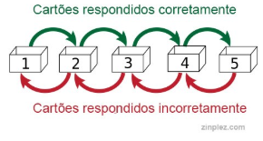

Uns amam estudar, outros já ficam pensando em como vão fazer para passar naquela prova terrível da semana que vem. Nessa hora tão essencial, algumas técnicas e dicas podem ajudar você a tirar o máximo de proveito de suas aulas na faculdade e de momentos preparatórios para provas e exames. Confira abaixo:
Material impresso
Tablets, celulares e notebooks são portáteis, convenientes e fazem parte da rotina de todo estudante, mais pesquisas sugerem que os materiais impressos, método tradicional de estudo, ainda tem grandes vantagens em relação a tecnologia.
Quando uma pessoa se aproxima de um computador ou de um tablet para ler, seu cérebro assume um estado de concentração menos aberto à aprendizagem, quando comparado à leitura em papel. O cérebro tende a associar esses aparelhos a instrumentos de trabalho (estresse) ou de diversão (lazer).
A leitura em papel gera no leitor uma postura mais investigativa, de autoquestionamento (o autoquestionamento é uma das ferramentas mais eficazes de aprendizagem).
Estude cansado, descanse em seguida
Pode parecer contraintuitivo a princípio, mais de acordo com a ciência, faz sentido.
Estudar quando estamos mais cansados imediatamente antes de dormir, pode realmente ajudar o seu cérebro a reter concentrações mais altas de habilidades novas, como falar um novo idioma ou aprender a tocar um instrumento. Existe até um termo em inglês para isso: “sleep-learning”
(em português, aprendizado do sono).
Isso acontece porque o processo de consolidação da memória está em seu melhor momento durante o sono “ de ondas lentas”, o que significa que a revisão do material antes de dormir, pode ajudar o cérebro a reter as informações de maneira mais eficiente.
Mude de cenário
Isso parece meio óbvio, não é? Embora possa parecer para alguns, muita gente deixa essa pequena mudança de lado. O psicólogo Roberto Bjork, da UCLA ( Universidade da Califórnia em Los Angeles) apontou que uma mudança tão simples na troca de local de estudo, pode ter um grande impacto nas habilidades de aprendizado, aumentando os níveis de retenção de informações e concentração.
Assuma o papel de "PROFESSOR"
Pesquisas mostram que os alunos têm melhor chances de recordação ao aprenderem novas informações quando têm a expectativa de ensiná-las a outra pessoa. Além disso, estudos também sugerem que os alunos se engajam mais e instintivamente buscam métodos de recordação e organização para o papel de “professor”.
Faça esse teste, experimente ensinar o que aprendeu a um colega ou até a um “colega imaginário”. O importante é ter a expectativa de “ser professor” desde o momento de estudo, porque é ela que proporciona os benefícios.
Sistema leitner (Cartão de memorização)
O Sistema Leitner é o mais conhecido para utilizar “cartões de memorização”. Ele serve para que os estudantes aprendam o conteúdo com o qual estão menos familiarizados pela repetição.
Em outras palavras , o aluno coloca todos os cartões com perguntas na caixa 1. Em seguida, pega cada cartão e tenta responder a pergunta. Se acertar a resposta, coloca-o na caixa 2. Se errar, deixa-o na caixa 1. O estudo passa para as caixas seguintes e a premissa permanece. A única diferença é que nas próximas se o estudante errar, deve voltar o cartão para a caixa anterior. Assim, os cartões na primeira caixa são estudados com mais frequência.

FONTE: BBC